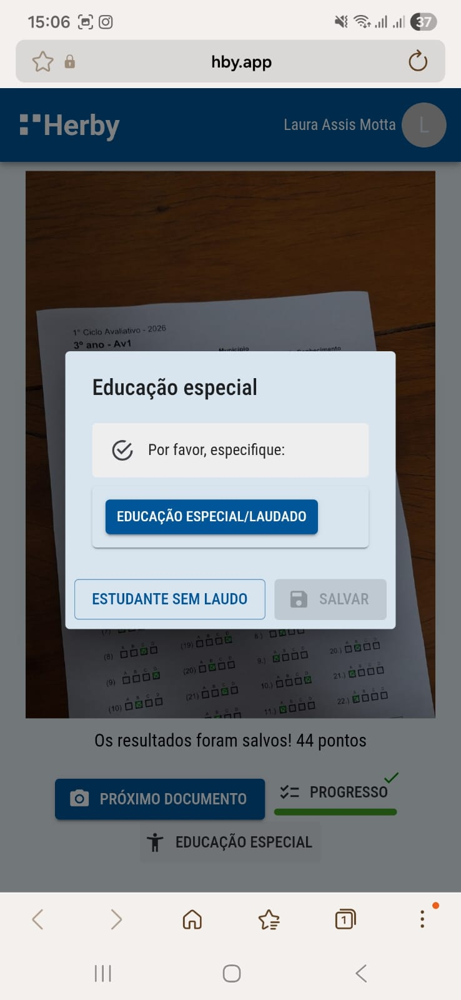

Sobre a Educação Especial
Para os estudantes da educação especial com laudo, é preciso clicar no botão Educação especial após a leitura para informar o aluno como elegível.

Para confirmar, você só precisa clicar em Elegível a Educação Especial/Laudado e depois em Salvar.

Para confirmar, você só precisa clicar em Estudante neurodivergente e depois em Salvar.